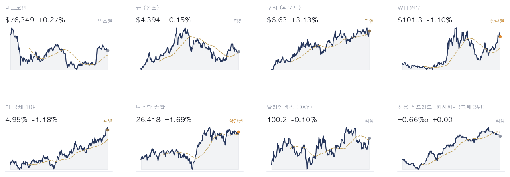
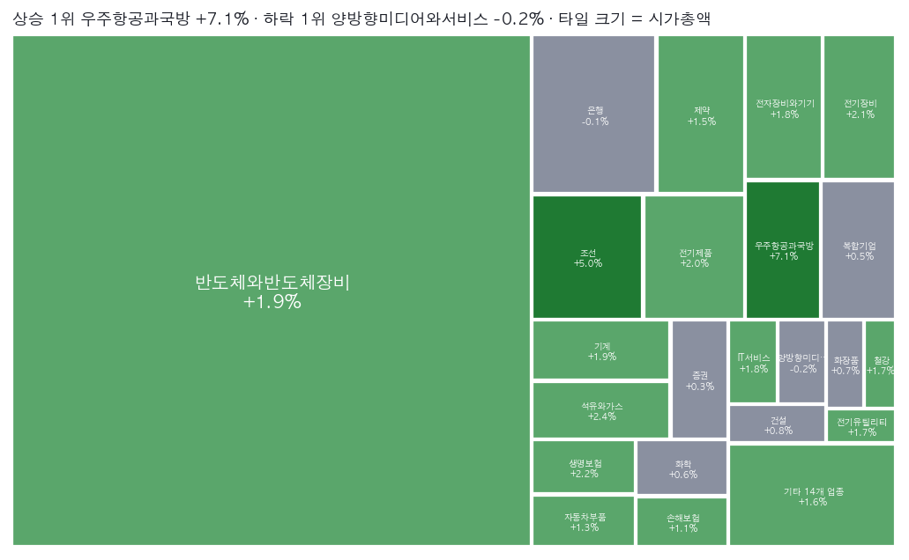
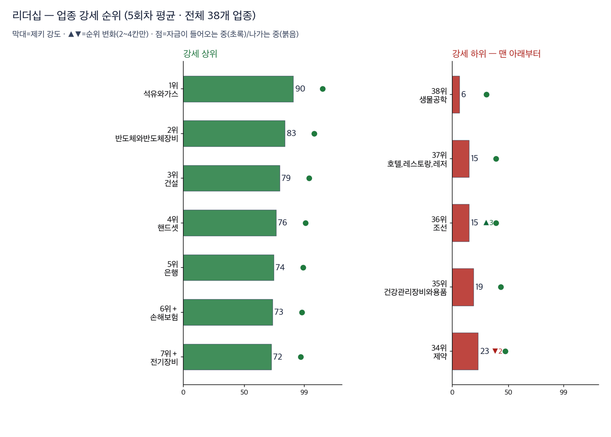
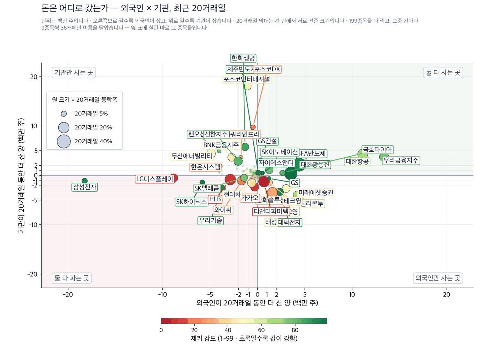
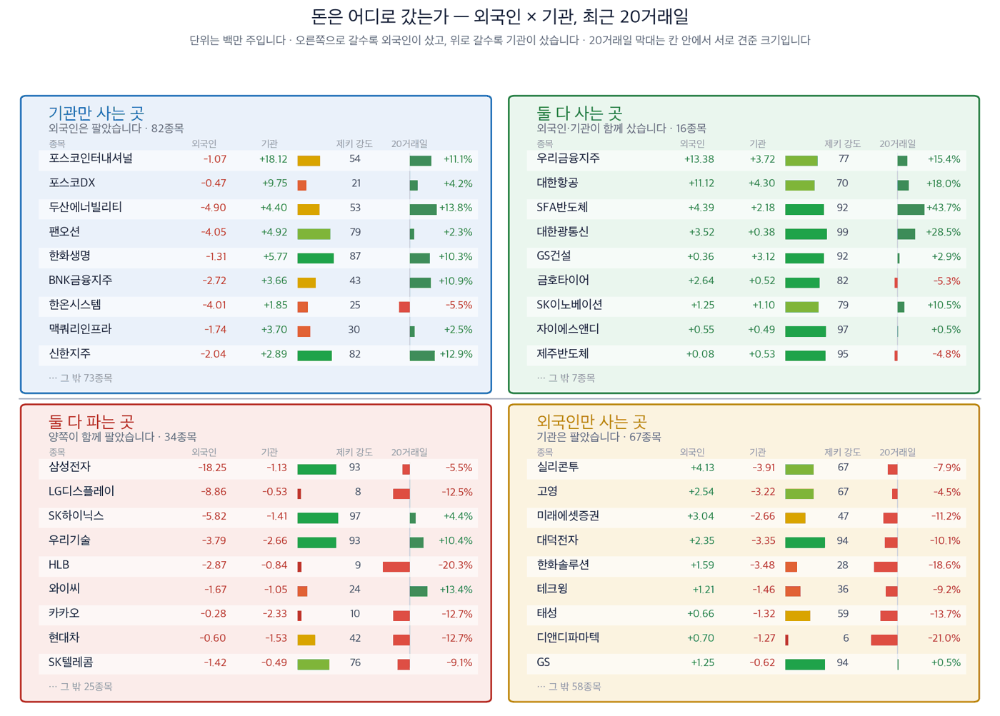
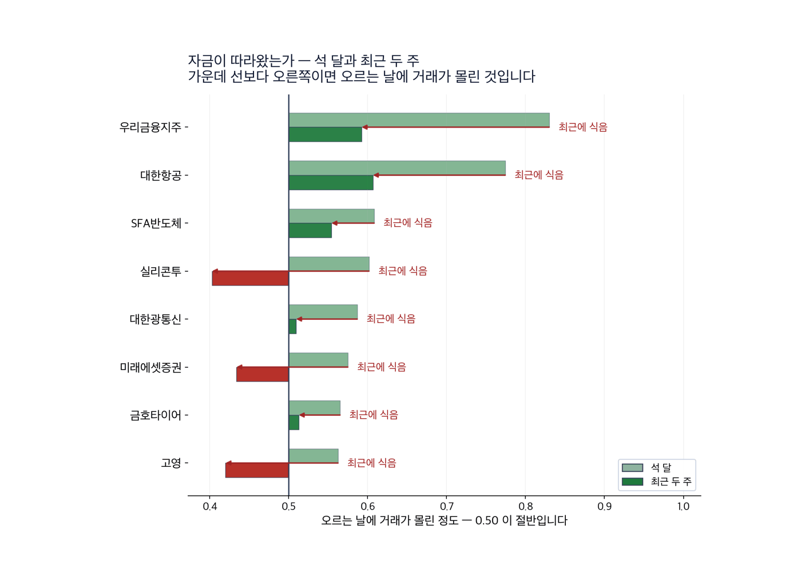
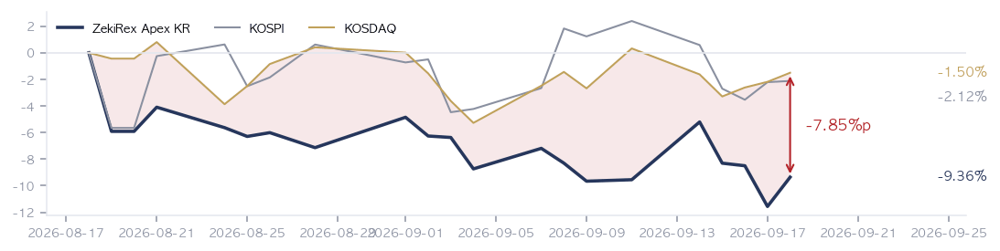

|
ZekiRex™ Apex KR — 2026년 9월 18일
오늘의 판단 · 1/2
데이터 기준 9/17 (KST) 종가 · 간밤 뉴욕 9/17 종가(현지시간) |
ZekiRex™ |
|
|
| 저희가 정한 규칙이 고른 종목과 그 성적을 매일 그대로 싣습니다. 맞았든 틀렸든 지우지 않습니다. |
|
THE REX CALL
연준 인상의 힘은 뉴욕에서 주가로 되돌아갔고, 서울에는 환율과 조달 비용으로 남았습니다.
저희 기준을 넘은 16종목 가운데 한 종목도 사지 않았습니다. 포트폴리오 슬롯 100% 소진, 현금 비중 0%입니다.
오늘 반드시 알아야 할 것
1. 원·달러 환율이 17일 주간거래에서 13.6원 오른 1382.2원으로 마감했습니다. 8월 27일 이후 3주 만의 1380원대입니다. 환율은 같은 값이 양쪽으로 갈립니다. 수입 원자재로 값을 치르는 기업에는 원가가 먼저 오고, 달러로 값을 받는 기업에는 환산 이익이 먼저 옵니다. 수입 비중이 큰 회사를 갖고 계시다면 3분기 원가 가정을 1,380원 기준으로 다시 보실 자리입니다. 한국투자증권은 17일 이번 상승을 추세 전환으로 보기는 이르다고 밝혔습니다. (머니투데이·조선일보) 2. 뉴욕 3대 지수가 17일 모두 올랐고 나스닥이 1.69% 상승했습니다. 이유는 값싸진 기름과 내려온 금리였습니다. 미 국채 10년물은 4.95%로 물러났습니다. 되돌림의 조건이 그 2가지였다면, 그 2가지가 되돌아가면 되돌림도 되돌아갑니다. CNBC는 한 최고투자책임자가 10년물이 5.25%를 넘으면 주가가 내려간다고 말했다고 전했습니다. 미국 기술주를 보고 계시다면 지수보다 그 금리를 먼저 확인하시는 편이 빠릅니다. (이데일리·AP통신·CNBC) 3. 외국인이 삼성전자와 SK하이닉스를 9조원 순매도하고 우리금융·항공·에너지로 옮겼습니다. 보유 비중은 그대로였습니다. 매일경제의 읽기대로라면 이것은 이탈이 아니라 자리 옮김입니다. 대형 전자주를 갖고 계시다면 지수 전체의 자금 유출로 읽지 않으셔도 됩니다. 다만 같은 돈이 은행과 에너지로 갔다는 뜻이므로, 그쪽을 이미 갖고 계시다면 값이 오른 뒤에 들어온 돈인지 확인하실 자리입니다. (매일경제·이데일리) 4. 5대 은행 5년 고정형 주택담보대출 금리가 연 4.95~6.92%입니다. 하단이 8월 말보다 27bp 올랐습니다. 은행채가 연말 5%에 이를 전망도 함께 실렸습니다. 예금과 대출의 차이로 버는 곳에는 이 값이 수익이고, 차주에게는 같은 값이 부담입니다. 변동금리 대출을 갖고 계시다면 연말까지의 이자 부담을 그 조달 수준으로 한 번 계산해 보실 자리입니다. (머니투데이·동아일보·경향신문) 5. 국고채 3년물이 17일 4.063%로 전날 4.053%보다 1bp 올랐고 장기물은 내렸습니다. 한국 신문 일부의 금리 급등 표현과 잰 값은 다릅니다. 한국은행은 같은 날 점검회의를 열고 앞으로 연준의 기조가 긴축적일 것으로 예상한다고 밝혔습니다. 한국과 미국의 금리 차이는 상단 기준 1.00%포인트로 벌어졌습니다. 채권형 상품을 갖고 계시다면 단기와 장기가 반대로 움직인 날이라는 점을 보셔야 합니다. (연합뉴스·동아일보)
| |
 이 그림 읽는 법 | 켜진 등 | 오늘의 국면입니다. 초록은 매수 우위, 노랑은 관망, 빨강은 매수 자제입니다. | | 채워진 칸 | 7가지 조건 중 몇 개를 통과했는지입니다. 칸이 많이 찰수록 시장 구조가 튼튼합니다. | | 칸이 다 찼는데 노랑·빨강이면 | 다른 이유로 한 단계 낮춘 것입니다. 그림 아래에 그 이유를 적었습니다. |
|
최근 10거래일 국면 추이 (왼쪽이 과거) 방향 — 코스피와 코스닥 모두 빨간불입니다. 코스피는 7가지 가운데 4가지, 코스닥은 2가지를 통과했습니다. 코스피는 어제 3가지에서 1가지 늘었습니다. 저희 규칙에서 이 신호등은 매수를 막지 않습니다. 위험은 종목마다 손절가로 관리합니다.
| |
| 오늘의 조치 | | 오늘 신규 매매 없음. 규칙이 요구하지 않는 날에 거래하지 않는 것도 하나의 결정입니다. |
|
| 오늘 반드시 알아야 할 것 |
|
연준 인상의 전달 경로가 9월 17일 두 시장에서 갈렸습니다
9월 17일 뉴욕에서는 국제유가와 미 국채금리가 함께 내렸습니다. 나스닥이 1.69% 올라 전날 낙폭을 하루 만에 되돌렸습니다. 같은 날 서울은 달랐습니다. 코스피는 +0.09%로 보합에 가깝게 마쳤고, 원화는 13.6원 올라 1382.2원이 됐습니다. 주가는 뉴욕에서 되돌아왔고, 서울에는 환율이 남았습니다. (이데일리·머니투데이) 왜 그런가. 되돌림의 조건은 값싸진 기름과 내려온 금리였습니다. 브렌트유는 사우디 동서 송유관의 조기 복구 기대로 104달러대까지 이틀 연속 내렸습니다. 미 국채 10년물은 4.95%로 물러났습니다. 그러나 한국은행은 17일 점검회의에서 연준의 기조가 긴축적일 것으로 예상한다고 밝혔습니다. 한국과 미국의 금리 차이는 상단 기준 1.00%포인트로 벌어졌습니다. 주가를 되돌린 조건은 하루 만에 바뀔 수 있지만, 금리 차이와 환율은 그 조건에 기대고 있지 않습니다. 다음에 무엇이. 보도가 가리킨 곳과 저희 계산이 만나는 자리는 은행과 보험입니다. 616종목 가운데 저희 기준을 넘은 16종목에 은행과 보험이 6종목 들어와 있습니다. 신한지주는 52주 최고가에서 1.2% 아래이고, 하나금융지주는 1.9%, KB금융은 3.9% 아래입니다. 금리가 오르는 동안 이 3종목이 최고가 근처까지 올라왔다는 뜻입니다. 그래서 값이 이미 올랐다는 뜻도 함께 됩니다. 지금 들어가는 것은 금리 상승을 새로 사는 것이 아니라 이미 오른 값을 사는 일이 될 수 있습니다.
그래서 우리는: 은행과 보험을 갖고 계시다면 이 값은 수익 쪽입니다. 5대 은행 5년 고정형 주담대 금리 하단이 8월 말보다 27bp 올랐습니다. 저희가 보는 616종목 가운데 저희 기준을 넘은 16종목에 은행과 보험이 6종목 들어와 있는 까닭이 여기에 있습니다. 반대쪽도 함께 보셔야 합니다. 조달 금리가 같이 오르면 예대마진은 생각만큼 넓어지지 않습니다. 저희 장부에서도 같은 값이 양쪽으로 왔습니다. 보유 4종목은 모두 손절가 위에 있고, 그 가운데 현대해상이 손절가에 가장 가깝습니다.
Rex Lens™
| |
| 그 밖에 알아야 할 것 | | 일본은행, 9월 18일 기준금리 결정 · 유럽중앙은행이 지난주 올린 데 이어 일본은행도 18일 추가 인상이 예상됩니다. 시장은 이 결정을 기다리고 있습니다. (경향신문 · Bloomberg) → 한국 투자자에게 엔화는 환율의 다른 절반입니다. 5대 은행 엔화예금은 1조1000억엔이고 이달에만 478억엔 늘었습니다. 엔화예금을 들고 계시다면 인상이 이미 값에 들어와 있는지 먼저 확인하실 자리입니다. | | 미국 과잉생산 관세 보고서, 9월 24일 정상회담 이후로 연기 · 미국이 과잉생산 관련 무역 보고서 발표를 24일 미중 정상회담 이후로 미룰 방침입니다. 중국산 제품에 7.5% 추가 관세를 매기는 방안이 담긴 것으로 알려졌습니다. (머니투데이 · Bloomberg) → 세율이 정해지기 전까지 중국 수출 비중이 큰 한국 부품 기업은 주문 계획을 세울 수 없습니다. 발표 시점이 곧 불확실성의 길이입니다. 그런 기업을 갖고 계시다면 4분기 수주 전망을 지금 숫자로 받아들이지 않으시는 편이 안전합니다. | | 리벨리온, 코스닥 상장 추진 · 인공지능 반도체 팹리스 기업 리벨리온이 코스닥 상장으로 기울었습니다. 올해 안에 예비심사를 청구하는 것이 목표이고, 기술평가를 건너뛰는 직행까지 검토하고 있습니다. (매일경제) → 코스닥 시가총액 상위의 주도권이 바이오에서 반도체 소재·부품·장비로 넘어가고 있습니다. 지수를 사는 투자자에게는 구성이 바뀌는 일입니다. 코스닥 지수형 상품을 갖고 계시다면 몇 년 전과 같은 업종 구성으로 생각하시면 안 됩니다. | | 마이크론 실적이 광통신 부품주의 방향을 가릅니다 · 수요가 확인된 인프라 설비 쪽으로 매수세가 몰리고 있습니다. 급락했던 광통신 부품주의 방향은 이달 말 마이크론 실적에서 갈릴 전망입니다. (머니투데이) → 저희 미국 명단의 첫 줄이 마이크론이고 제키 강도는 98입니다. 이달 말 숫자는 그 자리가 유지되는지를 가릅니다. 광통신 부품주나 메모리 종목을 갖고 계시다면 발표 전에 비중을 늘리는 것은 한 회사의 숫자에 거는 일이 됩니다. | | 토지거래허가구역 실거주 의무 유예 연장 · 무주택자가 토지거래허가구역 안의 세입자 있는 주택을 사면, 2027년 12월 31일까지 허가를 신청할 경우 실거주 의무가 유예됩니다. 입주는 최장 2029년 12월 말까지 미룰 수 있습니다. (동아일보) → 세입자를 둔 채로 살 수 있게 되면 매물이 더 나오고 수도권 거래량이 먼저 움직입니다. 건설은 저희 업종 순위 4위입니다. 건설주나 부동산 관련 상품을 갖고 계시다면 분양 물량보다 거래량이 먼저 도는 순서를 보셔야 합니다. |
| 한국과 미국을 잇는 것: 9월 17일 16:00 ET(현지시간, KST 9월 18일 05:00) 뉴욕에서 되돌아온 것은 주가이고, 서울로 넘어온 것은 달러값입니다. 유가와 미 국채금리가 내려 위험자산이 숨을 돌린 반면, 원화는 하루 만에 1380원대가 됐습니다. 이 조합이 한국 개장에 남기는 것은 2가지입니다. 수입 원자재로 값을 치르는 쪽에는 비용이 먼저 오고, 달러로 값을 받는 쪽에는 환차익이 먼저 옵니다. 그리고 한국은행이 17일 긴축적 기조를 전제로 말한 이상, 10월과 11월 회의는 미국이 아니라 환율과 수입물가가 끌고 갑니다. |
| 종목 | 비중 | 평가금액 | 평가손익 | 현재가 | 손절가 | 여유 | 보유일 | 다음 이벤트 | | 현대해상 | 25% | ₩227,485,750 | −₩9,468,950 | ₩49,250 | ₩47,196 | +4.4% | 6일 | — | | 타이거일렉 | 23% | ₩211,810,000 | −₩5,015,000 | ₩71,800 | ₩67,620 | +6.2% | 0일 | — | | GS | 25% | ₩227,372,200 | −₩3,982,000 | ₩114,200 | ₩106,904 | +6.8% | 24일 | — | | 지엔씨에너지 | 26% | ₩239,769,600 | +₩2,809,800 | ₩51,200 | ₩46,552 | +10.0% | 6일 | — | | 현금 | — | ₩3,150 | 아직 투자하지 않은 돈입니다 |
계좌 요약 | 시작 자본 | ₩1,000,000,000 | 2026-08-18 설정 | | 실현 손익 | −₩77,903,150 | 판 종목에서 확정된 금액 | | 평가 손익 | −₩15,656,150 | 들고 있는 종목의 장부상 손익 | | 현재 평가액 | ₩906,440,700 | 시작 대비 −9.36% | | 최고 평가액 | ₩1,000,000,000 | 지금은 고점 대비 −9.36% |
시작 자본에 실현 손익과 평가 손익을 더하면 현재 평가액이 됩니다. |
| Rex Korea Best — 이 뉴스레터에 실린 이름들의 성적표 | 무엇인가. 이 뉴스레터에 이름이 오른 회사들을 모아 만든 지수입니다. 관문을 통과한 종목과 포트폴리오 보유 종목을 합쳐 최대 스물다섯 곳까지, 모두 같은 비중으로 담습니다. 명단은 판이 나가는 날 그대로 적어 두고 뒤에 고치지 않습니다 — 지나고 나서 좋았던 것만 골라 넣으면 어떤 성적표도 좋아 보이기 때문입니다. 무엇을 위한 것인가. 저희가 지면에 적은 이름이 실제로 값을 하는지 숫자로 남기기 위해서입니다. 그래서 같은 기간 코스피 · 코스닥과 나란히 놓고, 사고파는 비용을 뺀 뒤의 숫자도 함께 싣습니다. 숫자 읽는 법. 제키 강도는 같은 기간 다른 주식과 견준 주가의 힘을 100점 만점으로 매긴 것입니다. 100점에 가까울수록 많이 오른 쪽입니다. 아닌 것. 살 수 있는 상품이 아니고, 추천도 아니며, 저희 계좌의 성적도 아닙니다. | | Rex Korea Best | −0.40% | 비용 전 | | 같은 것, 비용 차감 후 | −0.54% | | | 코스피 | +0.60% | | | 코스닥 | +1.84% | |
3거래일치입니다. 짧은 구간은 운과 실력을 가르지 못하므로 120거래일이 쌓이기 전까지는 이 숫자로 판단하지 마십시오. 많이 오른 쪽 | 지엔씨에너지 119850 | +7.90% — 평소보다 훨씬 많이 거래됐습니다. | | DB손해보험 005830 | +3.64% | | GS 078930 | +2.51% |
많이 내린 쪽 | 타이거일렉 219130 | −2.31% | | 코스맥스 192820 | −1.96% | | 자이에스앤디 317400 | −1.45% |
|
| 관문을 통과한 종목 — 자리가 없어 담지 못한 이름들 | | 금융 4 | | 000370 한화손해보험 | RS 84 | ₩8,330 | | 055550 신한지주 | RS 82 | ₩114,100 | | 086790 하나금융지주 | RS 82 | ₩138,500 | | 105560 KB금융 | RS 81 | ₩179,700 | | 반도체·하드웨어 2 | | 252990 샘씨엔에스 | RS 91 | ₩16,820 | | 098120 마이크로컨텍솔 | RS 90 | ₩52,800 | | 산업재·인프라 2 | | 317400 자이에스앤디 | RS 98 | ₩10,210 | | 028670 팬오션 | RS 80 | ₩5,900 | | 소비 1 | | 192820 코스맥스 | RS 92 | ₩275,000 |
| 왜 못 담았나. 자리는 넷뿐이고 각 자리에 총자산 25%가 들어갑니다 — 한 종목이 −8%에 걸려도 계좌 전체로는 2% 손실이 되도록 맞춘 구조입니다. 자리를 비우는 길은 손절과 오실레이터 이탈 둘뿐이라, 더 좋은 후보가 나와도 갈아타지 않습니다.
이 목록이 뜻하는 것. 16개가 조건을 통과했고 그중 보유 중인 종목을 뺀 9개가 대기 중입니다. RS는 80~98입니다. 우리 4자리는 반도체·하드웨어 2, 에너지·정유 1, 금융 1로 나뉘어 있고 가장 큰 쪽이 반도체·하드웨어입니다 — 그래서 하루 등락이 지수와 평균 2.3%p 벌어졌고, 가장 크게 갈린 9/7 세션에는 코스피 보다 5.6%p 더 내렸습니다. 자리가 하나 열리면 이 순서의 맨 위부터 검토합니다. 매수 추천이 아닙니다. |
조건은 통과했지만 품질 하한에서 걸린 종목 | 롯데렌탈 089860 — 재무 등급 SMR E — 품질 하한 미달 | | 금호타이어 073240 — 품질 하한 미달 | | DB손해보험 005830 — 품질 하한 미달 |
|
| 핵심 지표 | 코스피 6,724 +0.09% · 고점 −26.2% 6,724.34로 +0.09% 올라 보합에 가깝습니다. 연준 결정 이튿날 서울이 주가로는 거의 반응하지 않았다는 뜻입니다. 52주 최고가보다 26.2% 아래입니다. 박스권 | 코스닥 822 +0.70% · 고점 −33.0% 821.67로 +0.70% 올랐습니다. 코스피는 같은 날 +0.09%였습니다. 다만 52주 최고가보다 33.0% 아래로 코스피보다 더 내려와 있습니다. 금리가 오르는 구간에서 먼 미래의 이익을 파는 쪽이 먼저 깎입니다. 박스권 | 원/달러 ₩1,382.00 칸의 값은 9월 16일 서울 고시 ₩1,376.70입니다. 9월 17일 주간거래는 13.6원 올라 1382.2원으로 마감했습니다. 한미 금리차가 1.00%포인트로 벌어진 이상 이 방향이 이어집니다. (머니투데이) 하단권 | 국고채 3년 4.06% 칸의 값은 9월 16일 기준 4.05%입니다. 9월 17일에는 4.063%로 1bp 올랐고 장기물은 내렸습니다. 단기와 장기가 반대로 움직인 날이며, 한국은행의 다음 회의가 시장의 기준입니다. (연합뉴스) 과열 | S&P 500 7,638 상단권 | 포트폴리오 -9.36% 현금 0% · 보유 4종목 8월 18일 시작 이후 -9.36%이고 코스피는 -2.12%입니다. 코스피보다 뒤에 있습니다. 9월 17일 하루는 2.20%포인트 회복했습니다. 현금 비중 0%이므로 다음 매수는 한 종목이 손절가를 밑돈 뒤에 가능합니다. 설정 이후 |
|
| 한 줄 정리: 이 뉴스레터는 9월 17일 서울 종가와 미국 9월 17일 16:00 ET(현지시간) 종가에 붙어 있습니다. 코스피는 +0.09% 올라 6,724.34, 코스닥은 +0.70% 올라 821.67로 마감했습니다. 원·달러와 국고채 금리 칸은 9월 16일 서울 고시 값입니다. 9월 17일 고시가 이 뉴스레터를 만든 시점에 아직 나오지 않아, 기준일을 밝혀 그대로 실었습니다. |
|
|
|
판단의 근거 · 2/2
데이터 기준 9/17 (KST) 종가 · 간밤 뉴욕 9/17 종가(현지시간) |
ZekiRex™ |
|
|
 Rex Pulse™ — 지수·가상자산 / 통화 / 원자재 / 채권 16종, 1년 흐름과 50일 평균값(점선) · 기준 한국 9/17 종가, 뉴욕 9/17 종가(현지시간) |
미 국채 10년물이 4.95%로 내려왔습니다. 30년물은 5.30%입니다. 달러인덱스는 100.2로 -0.09% 거의 제자리입니다. 금리가 내리고 달러가 움직이지 않았다면, 이날 뉴욕의 상승은 통화가 아니라 채권 쪽에서 왔습니다. 브렌트유는 104.2달러로 -1.51%, 서부텍사스산원유는 101.3달러로 -1.14%입니다. 구리는 파운드당 6.61달러로 +2.84% 올라 과열 구간입니다. 기름이 내리고 구리가 오르는 조합은 경기 둔화 신호가 아닙니다. 그래서 보실 것은 2가지입니다. 먼저 10년물이 그 문턱 아래에 머무는지입니다. 다음은 구리가 이 자리를 지키는지입니다. 지키면 원가는 내리고 수요는 남는 구간이 이어집니다. |
 색은 당일 등락(짙을수록 큼), 타일은 시가총액입니다. 상단에 당일 상승·하락 1위가 적혀 있고, 큰 칸이 움직인 날이 지수가 움직인 날이라는 뜻입니다 — 아래 리더십 순위(추세의 힘)와 함께 읽으십시오. |
| 리더십 — 업종 강세 순위 |  이 그림 읽는 법 | 막대 | 업종 소속 종목의 제키 강도 중앙값입니다. 최근 5회차를 평균해 하루치 흔들림을 걷어냈습니다. | | ▲▼ 숫자 | 하루 전보다 순위가 몇 칸 움직였는지입니다. 1칸은 너무 작고 5칸 이상은 절반이 되돌아와서(실측) 2~4칸만 적습니다. | | 점 | 20거래일 자금 순위의 방향입니다. 초록이면 들어오는 중, 붉으면 나가는 중입니다. | | 공동 순위 | 값이 같으면 같은 순위입니다. 억지로 가르지 않습니다. | | 강세 상위 | 강도가 가장 높은 업종들입니다. 자리가 열리면 여기서부터 찾습니다. | | 강세 하위 | 전체 업종 가운데 맨 아래입니다. 번호는 왼쪽과 같은 잣대라, 38개 업종이면 38위가 가장 약합니다. 지금 새로 살 자리가 아니고, 들고 계신 종목이 여기 속하면 손절가부터 확인하실 자리입니다. 바닥에서 돌아서는 업종은 막대보다 점이 먼저 초록으로 바뀝니다. | | 번호가 건너뛰면 | ＋ 표시가 붙은 업종입니다. 맨 아래 다섯에 들지는 않았지만 본문이 짚었거나 저희가 들고 있어 함께 실었습니다. 자료가 빠진 것이 아닙니다. |
| 순위 | 업종 | 제키 강도 | 변화 |
|---|
| 1위 | 석유와가스 | 90 | | | 2위 | 반도체와반도체장비 | 83 | | | 3위 | 건설 | 79 | | | 38위 | 생물공학 | 6 | | | 37위 | 호텔,레스토랑,레저 | 15 | | | 36위 | 조선 | 15 | ▲3 |
| | 수급 — 외국인·기관은 어느 쪽이었나 |  이 그림 읽는 법 | 점 하나 | 종목 하나입니다. 가로·세로 위치가 두 값을 그대로 나타내고, 가운데 가로·세로로 그어진 두 선이 기준선입니다. 네 귀퉁이의 이름표가 그 칸의 뜻입니다. | | 점 크기 | 최근 20거래일 등락폭입니다. 오르든 내리든 크게 움직였으면 큰 점입니다. | | 점 색 | 제키 강도입니다. 초록일수록 주가가 시장에서 강합니다. | | 30종목만 | 이름이 겹치면 못 읽기 때문입니다. 가운데 몰린 나머지는 움직임이 거의 없는 종목들이라 뺐습니다. |
 이 그림 읽는 법 | 이 그림이 말하지 않는 것 | 같은 기간의 수급과 등락을 나란히 놓은 것입니다. 앞으로는 이렇습니다 — 외국인과 기관이 사면 하루 이틀은 실제로 오릅니다. 그 다음 되돌립니다. 그리고 그 폭이 세금과 수수료보다 작습니다. 그래서 이 그림을 보고 사고파시면 손해입니다. 둘 다 사들이는 것을 보고 그 다음 날 사면, 20거래일 뒤에 올라 있을 확률은 48%입니다 — 아무 종목이나 골랐을 때(49%)와 같습니다. 저희가 503종목 17년치로 쟀습니다. | | 네 칸 | 가로와 세로 두 값이 각각 기준선을 넘었는지로 넷을 가릅니다. 오른쪽 위는 둘 다 넘은 곳, 왼쪽 아래는 둘 다 못 넘은 곳, 나머지 두 칸은 한쪽만 넘은 곳입니다. 칸 이름이 그 칸에 든 종목의 상태를 한 문장으로 적어 둔 것입니다. | | 가운데 두 칸 | 두 기간을 견주는 자리입니다. 글자 A~E가 있으면 이 업계가 쓰는 표준 등급으로, A는 강한 매수, B는 매수 우세, C는 매수와 매도가 반반, D는 매도 우세, E는 강한 매도를 뜻합니다(전체를 다섯으로 나눈 순위라 A가 상위 20%입니다). 숫자가 있으면 그 기간에 산 양에서 판 양을 뺀 것입니다. | | 칸마다 9종목 | 그 칸에서 움직임이 가장 큰 순서입니다. 나머지는 칸 아래에 몇 종목인지만 적었습니다. 옆 산점도가 이름을 다는 종목이 바로 이 9종목씩입니다. | | 20거래일 막대 | 0을 가운데 두고 오른쪽이 상승, 왼쪽이 하락입니다. 길이는 같은 칸 안에서만 서로 견주십시오 — 칸마다 기준이 다릅니다. | | 제키 강도 | 1~99 순위입니다. 막대가 길수록, 초록에 가까울수록 그 종목의 주가가 시장에서 강합니다. |
 이 그림 읽는 법 | 막대 둘 | 위가 석 달, 아래가 최근 두 주입니다. 같은 종목의 두 기간을 나란히 놓았습니다. | | 가운데 선 | 0.50 입니다. 오른쪽이면 오르는 날에 거래가 더 몰렸고, 왼쪽이면 내리는 날에 몰렸습니다. | | 화살표 | 석 달에서 두 주로 가는 방향입니다. 오른쪽으로 가면 최근에 더 들어온 것이고, 왼쪽이면 식은 것입니다. | | 맨 오른쪽 글씨 | 그 방향을 말로 적은 것입니다 — 「최근에 더 들어옴」이면 자금이 이어지는 중입니다. |
이름을 확인한 종목 전부를 넷으로 갈랐습니다. 오른쪽으로 갈수록 외국인이 샀고, 위로 갈수록 기관이 샀습니다. 지금 누가 사고 있는지를 보여 주는 자리이지 무엇을 사라는 자리가 아닙니다. 업종 — 값의 강세와 돈의 흐름을 나란히 돈이 먼저 온 곳 — 값은 아직입니다 | 업종 | 강세 | 자금 | 20거래일 |
|---|
| 게임엔터테인먼트 | 43 | 16 | +342,156주 | | 화학 | 34 | 10 | +1,350,854주 | | 부동산 | 29 | 11 | +1,258,033주 |
값만 센 곳 — 돈은 빠지고 있습니다 | 업종 | 강세 | 자금 | 20거래일 |
|---|
| 반도체와반도체장비 | 3 | 46 | -19,931,563주 | | 백화점과일반상점 | 10 | 41 | -4,351,915주 | | 전자장비와기기 | 14 | 43 | -4,918,757주 |
강세 순위 — 제키 강도(12개월 가중)로 세운 순위입니다. 최근 5회차를 평균해 하루치 흔들림을 걷어냈습니다. 자금 순위 — 20거래일 순매수로 세운 순위입니다. 값이 아니라 **돈이 들어온 양**을 봅니다. 공동 순위 — 값이 같으면 같은 순위를 줍니다. 억지로 가르지 않습니다. 두 순위가 어긋나면 — 그 자리가 볼 만합니다. 돈이 먼저 오면 값이 아직인 것이고, 값이 먼저 세면 돈이 빠지는 중일 수 있습니다. |
| Rex 25™ — 당일 등락률 전체 순위 | | 01 ● 119850 지엔씨에너지+7.90% | | 02 005830 DB손해보험+3.64% | | 03 ● 078930 GS+2.51% | | 04 098120 마이크로컨텍솔+2.13% | | 05 000370 한화손해보험+1.96% | | 06 028670 팬오션+1.90% | | 07 ● 001450 현대해상+1.76% | | 08 105560 KB금융+1.53% | | 09 252990 샘씨엔에스+1.39% | | 10 055550 신한지주+1.33% | | 11 089860 롯데렌탈+1.15% | | 12 086790 하나금융지주+0.95% | | 13 073240 금호타이어-0.28% | | 14 317400 자이에스앤디-1.45% | | 15 192820 코스맥스-1.96% | | 16 ● 219130 타이거일렉-2.31% |
| 9월 17일 1일 상승률 1위는 지엔씨에너지이고, 1일 하락률 1위는 타이거일렉입니다. 두 종목 모두 저희 장부의 이름이고, 어제 사들인 쪽이 하락률 1위입니다. 체결은 9월 16일 종가였으므로 그만큼 비싸게 산 값을 아직 되찾지 못했다는 뜻입니다. 저희 기준을 넘은 16종목 가운데 대부분이 올랐습니다. 코스피가 보합에 가까웠던 날 저희 기준을 넘은 종목이 이만큼 오른 것은, 지수가 아니라 종목별로 값이 다시 매겨지고 있다는 뜻입니다. 그래서 지수보다 종목마다 걸어 둔 손절가를 봐야 합니다. | | 16종목뿐입니다. 25자리 가운데 오늘 조건을 만족한 것이 16개라는 뜻이고, 빈자리는 채우지 않습니다. ● 표시가 우리 보유 종목입니다. 순서는 등락률만 따릅니다 — 하락 상위에 보유 종목이 있어도 그 자체가 매도 신호는 아닙니다. 매도는 −8% 손절과 오실레이터 이탈, 둘뿐입니다. |
| 보유 비중 — 하한 8% / 진입 25% | | 지엔씨에너지 11985026.5% | | 현대해상 00145025.1% | | GS 07893025.1% | | 타이거일렉 21913023.4% |
25%는 진입 시점의 크기이지 보유 한도가 아닙니다. 오른 종목을 크다는 이유로 줄이지 않습니다. |
| Rex Radar™ — 앞으로의 일정 | | 이번 주의 핵심 — 이번 주의 중심은 연준이 방향을 바꾼 뒤 그 힘이 어디로 흘렀는지입니다. 미국 주식은 하루 만에 값을 되찾았지만 한국에 남은 것은 환율과 조달 비용이고, 이쪽은 되돌아오지 않았습니다. 씨티 등 투자은행은 한국은행이 11월에 기준금리를 연 3.25%로 올릴 것으로 봅니다. (동아일보) | 9월 18일 (금) · 일본 9월 18일 (금) 발표 (현지시간) 일본은행 기준금리 결정핵심유럽중앙은행이 지난주 올린 데 이어 일본은행도 추가 인상이 예상됩니다. 엔화는 환율의 다른 절반입니다. 볼 숫자: 5대 은행 엔화예금 1조1000억엔이 이달 478억엔 늘어난 흐름이 이어지는지 봅니다. | 9월 24일 (목) 미중 정상회담 이후 미국 과잉생산 무역 보고서 발표핵심중국산 제품에 7.5% 추가 관세를 매기는 방안이 담긴 것으로 알려졌습니다. 볼 숫자: 발표가 24일 이후로 미뤄진 만큼, 중국 수출 비중이 큰 부품 기업의 4분기 주문 계획을 봅니다. | 9월 말 · 미국 현지 발표 (현지시간) 마이크론 실적 발표핵심급락했던 광통신 부품주의 방향이 이 숫자에서 갈립니다. 저희 미국 명단 첫 줄이 마이크론이고 제키 강도는 98입니다. 볼 숫자: 반도체와반도체장비가 저희 업종 순위 3위를 유지하는지 봅니다. |
|
|
 지금 지수와의 차이 — 코스피 대비 −7.24%p · 코스닥 대비 −7.85%p 8월 18일 시작 이후 저희 장부는 -9.36%이고, 코스피는 -2.12%, 코스닥은 -1.50%입니다. 두 지수보다 뒤에 있고, 좋지 않은 숫자지만 그대로 알려 드립니다. 9월 17일 하루는 2.20%포인트 회복했습니다. 어제 -11.56%에서 줄어든 것이며, 보유 4종목 가운데 3종목이 올랐습니다. 닫힌 거래 6건 가운데 1건이 이익이었습니다. 하루의 회복보다 종목마다 걸어 둔 손절가를 봐야 합니다. 현대해상이 그 선에 가장 가깝다는 뜻입니다. |
| 2026-09-17 종가 기준 심사 대상 616종목 가운데 16종목이 조건을 통과했습니다. 조건 통과는 매수 추천이 아닙니다. |
| 출처: 한국거래소(KRX) 공시 시세, 15:30 종가 · 서울외국환중개 고시환율(네이버 금융) · 야후 파이낸스 · 네이버 금융 |
|
본 리포트는 정보 제공 목적이며 개별 투자 자문이 아닙니다. ZekiRex™ Apex KR는 10억 원 규모의 모의 포트폴리오를 규칙 기반으로 운용합니다. 실제 계좌도, 주문도, 사고판 일도 없습니다. 표시된 성과에는 수수료와 세금, 매매 시 가격 미끄러짐이 반영되지 않았습니다. 종목 자료에는 상장폐지된 회사가 빠져 있습니다. 그래서 성과가 실제보다 높게 나오는 치우침(생존편향)이 있습니다. 과거의 성과는 미래를 보장하지 않으며, 투자에는 원금 손실 위험이 따릅니다. |
| This is the Rex Way, ZekiRex™ |
|